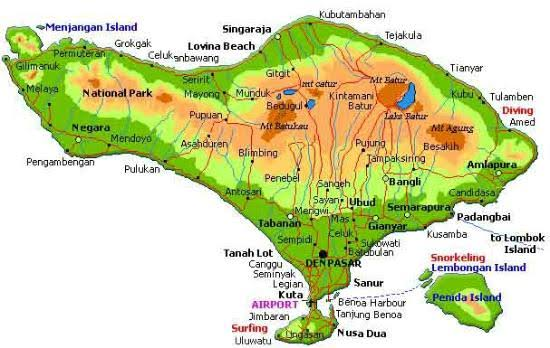

BALI

Bali adalah primadona pariwisata Indonesia yang sudah terkenal di seluruh dunia. Selain terkenal dengan keindahan alam, terutama pantainya, Bali juga terkenal dengan kesenian dan budayanya yang unik dan menarik. Industri pariwisata berpusat di Bali Selatan dan di beberapa daerah lainnya. Lokasi wisata yang utama adalah Kuta dan sekitarnya seperti Legian dan Seminyak, daerah timur kota seperti Sanur, pusat kota seperti Ubud, dan di daerah selatan seperti Jimbaran, Nusa Dua dan Pecatu. Bali sebagai tempat tujuan wisata yang lengkap dan terpadu memiliki banyak sekali tempat wisata menarik, antara lain: Pantai Kuta, Pura Tanah Lot, Pantai Padang - Padang, Danau Beratan Bedugul, Garuda Wisnu Kencana (GWK), Pantai Lovina dengan Lumba Lumbanya, Pura Besakih, Uluwatu, Ubud, Munduk, Kintamani, Amed, Tulamben, Pulau Menjangan dan masih banyak yang lainnya. Kini, Bali juga memiliki beberapa pusat wisata yang sarat edukasi untuk anak-anak seperti kebun binatang, museum tiga dimensi, taman bermain air, dan tempat penangkara